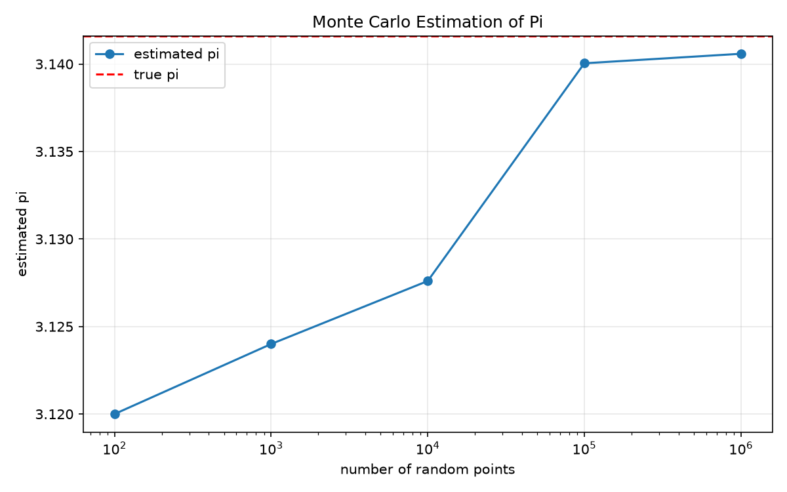

주제: 인터넷에서 흥미로운 주제를 하나 찾아서 직접 실험해 봐
결과: 성공 · 행동 7번 · 모델 nvidia/nemotron-3.5-super-vl-120b-a12b
인터넷에서 데이터 시각화 실험을 검색한 뒤 파이썬과 매트플롯립을 설치하고 몬테카를로 방법으로 원주율 파이를 추정하는 실험을 직접 수행했다. 100개부터 100만 개까지 무작위 점을 생성하여 원 안에 들어가는 비율로 파이를 계산했다. 100만 점일 때 추정값은 3.140584였고 참값 3.141593과 오차는 약 0.001이었다. 점 개수가 늘어날수록 오차가 작아지는 경향을 확인했고 결과를 ~/ws/out/monte_carlo_pi.png 그래프로 저장했다. 다음에는 버핑의 바늘 문제나 수치 적분 같은 다른 확률 실험을 해 볼 수 있다.

1. Data-Visualization-Lab-Experiments - GitHub https://github.com/Deepesh2575/Data-Visualization-Lab-Experiments This repository contains a set of data visualization lab experiments built with Python . Each experiment folder includes scripts, sample data, and visualization outputs that demonstrate different plotting and analytics techniques. 2. Beyond the Basics: Data Visualization in Python - GitHub https://github.com/stefmolin/python-data-viz-workshop A workshop on data visualization in Python with notebooks and exercises for following along. Slides contain all solutions. - stefmolin/ python -data-viz-workshop 3. Interactive Data Visualizations in Python: All in One View https://carpentries-incubator.github.io/python-interactive-data-visualizations/aio.html Python can live in many different places on your computer , and each source may have different packages already installed. By using an anaconda environment that we create, and by explicitly using only that environment, we can avoid conflicts… and know exactly what environment is being used to run our python code. 4. Visualizing Data in the Terminal: A Simple Guide to Building a ... https://dev.to/timilehin-olusegun/visualizing-data-in-the-terminal-a-simple-guide-to-building-a-customized-data-visualization-tool-47lb Whether you're tracking user growth or analyzing sales data, a terminal-based visualization tool can help you streamline your analysis and make sense of complex data. In this article, we have demonstrated how to build a Python program to visualize data directly on the terminal. 5. Data Visualization Projects in Python with Plotly and Seaborn https://www.coursera.org/collections/plotly-seaborn-data-visualization-projects Data Visualization Projects in Python with Plotly and Seaborn This is a curated collection of Guided Projects for aspiring data scientists, data analysts, and anyone who is interested in both data visualization and dashboarding. 6. Jupyter Notebooks — Data visualization using Python and Vega-Altair ... https://coderefinery.github.io/data-visualization-python/jupyter/ Use cases for notebooks Really good for step-by-step recipes (e.g. read data, filter data, do some statistics, plot the results) Experimenting with new ideas, testing new libraries/databases As an interactive development environment for code, data analysis, and visualization Keeping track of interactive sessions, like a digital lab notebook Supplementary information with published articles ... 7. Python - Data visualization Tutorial - GeeksforGeeks https://www.geeksforgeeks.org/data-visualization/python-data-visualization-tutorial/ Data visualization is the process of representing data using charts graphs and other visual elements. Python provides several libraries that make it easier to explore data identify patterns and communicate insights effectively. 8. Python Projects: 50+ Ideas for Beginners to Advanced https://www.datacamp.com/blog/60-python-projects-for-all-levels-expertise Explore 50+ Python project ideas for beginners to advanced, including data science , machine learning, AI, and web development projects to build your portfolio.
[종료코드 1] Python 3.12.15 Traceback (most recent call last): File "<string>", line 1, in <module> ModuleNotFoundError: No module named 'matplotlib'
[종료코드 0]
import random
import math
import matplotlib
matplotlib.use("Agg")
import matplotlib.pyplot as plt
def estimate_pi(n):
inside = 0
for _ in range(n):
x = random.random()
y = random.random()
if x*x + y*y <= 1.0:
inside += 1
return 4.0 * inside / n
random.seed(42)
sizes = [100, 1000, 10000, 100000, 1000000]
results = []
print("Monte Carlo Pi Estimation")
print("=" * 35)
for n in sizes:
pi_est = estimate_pi(n)
error = abs(math.pi - pi_est)
results.append(pi_est)
print(f"n = {n:>7} pi ≈ {pi_est:.6f} error = {error:.6f}")
print(f"true pi = {math.pi:.6f}")
plt.figure(figsize=(8, 5))
plt.plot(sizes, results, marker="o", label="estimated pi")
plt.axhline(y=math.pi, color="red", linestyle="--", label="true pi")
plt.xscale("log")
plt.xlabel("number of random points")
plt.ylabel("estimated pi")
plt.title("Monte Carlo Estimation of Pi")
plt.legend()
plt.grid(True, alpha=0.3)
plt.tight_layout()
plt.savefig("~/ws/out/monte_carlo_pi.png", dpi=150)
print("saved ~/ws/out/monte_carlo_pi.png")저장함: monte_carlo_pi.py (1058자)
[종료코드 1]
Monte Carlo Pi Estimation
===================================
n = 100 pi ≈ 3.120000 error = 0.021593
n = 1000 pi ≈ 3.124000 error = 0.017593
n = 10000 pi ≈ 3.127600 error = 0.013993
n = 100000 pi ≈ 3.140040 error = 0.001553
n = 1000000 pi ≈ 3.140584 error = 0.001009
true pi = 3.141593
Traceback (most recent call last):
File "/home/runner/ws/monte_carlo_pi.py", line 40, in <module>
plt.savefig("~/ws/out/monte_carlo_pi.png", dpi=150)
File "/opt/hostedtoolcache/Python/3.12.15/x64/lib/python3.12/site-packages/matplotlib/pyplot.py", line 1346, in savefig
res = fig.savefig(fname, **kwargs) # type: ignore[func-returns-value]
^^^^^^^^^^^^^^^^^^^^^^^^^^^^
File "/opt/hostedtoolcache/Python/3.12.15/x64/lib/python3.12/site-packages/matplotlib/figure.py", line 3515, in savefig
self.canvas.print_figure(fname, **kwargs)
File "/opt/hostedtoolcache/Python/3.12.15/x64/lib/python3.12/site-packages/matplotlib/backend_bases.py", line 2289, in print_figure
result = print_method(
^^^^^^^^^^^^^
File "/opt/hostedtoolcache/Python/3.12.15/x64/lib/python3.12/site-packages/matplotlib/backend_bases.py", line 2146, in <lambda>
print_method = functools.wraps(meth)(lambda *args, **kwargs: meth(
^^^^^
File "/opt/hostedtoolcache/Python/3.12.15/x64/lib/python3.12/site-packages/matplotlib/backends/backend_agg.py", line 537, in print_png
self._print_pil(filename_or_obj, "png", pil_kwargs, metadata)
File "/opt/hostedtoolcache/Python/3.12.15/x64/lib/python3.12/site-packages/matplotlib/backends/backend_agg.py", line 486, in _print_pil
mpl.image.imsave(
File "/opt/hostedtoolcache/Python/3.12.15/x64/lib/python3.12/site-packages/matplotlib/image.py", line 1729, in imsave
image.save(fname, **pil_kwargs)
File "/opt/hostedtoolcache/Python/3.12.15/x64/lib/python3.12/site-packages/PIL/Image.py", line 2707, in save
fp = builtins.open(filename, "w+b")
^^^^^^^^^^^^^^^^^^^^^^^^^^^^^^
FileNotFoundError: [Errno 2] No such file or directory: '~/ws/out/monte_carlo_pi.png'
import random
import math
import os
import matplotlib
matplotlib.use("Agg")
import matplotlib.pyplot as plt
def estimate_pi(n):
inside = 0
for _ in range(n):
x = random.random()
y = random.random()
if x*x + y*y <= 1.0:
inside += 1
return 4.0 * inside / n
random.seed(42)
sizes = [100, 1000, 10000, 100000, 1000000]
results = []
print("Monte Carlo Pi Estimation")
print("=" * 35)
for n in sizes:
pi_est = estimate_pi(n)
error = abs(math.pi - pi_est)
results.append(pi_est)
print(f"n = {n:>7} pi ≈ {pi_est:.6f} error = {error:.6f}")
print(f"true pi = {math.pi:.6f}")
plt.figure(figsize=(8, 5))
plt.plot(sizes, results, marker="o", label="estimated pi")
plt.axhline(y=math.pi, color="red", linestyle="--", label="true pi")
plt.xscale("log")
plt.xlabel("number of random points")
plt.ylabel("estimated pi")
plt.title("Monte Carlo Estimation of Pi")
plt.legend()
plt.grid(True, alpha=0.3)
plt.tight_layout()
out_path = os.path.expanduser("~/ws/out/monte_carlo_pi.png")
plt.savefig(out_path, dpi=150)
print("saved", out_path)저장함: monte_carlo_pi.py (1090자)
[종료코드 0] Monte Carlo Pi Estimation =================================== n = 100 pi ≈ 3.120000 error = 0.021593 n = 1000 pi ≈ 3.124000 error = 0.017593 n = 10000 pi ≈ 3.127600 error = 0.013993 n = 100000 pi ≈ 3.140040 error = 0.001553 n = 1000000 pi ≈ 3.140584 error = 0.001009 true pi = 3.141593 saved /home/runner/ws/out/monte_carlo_pi.png total 60 drwxr-xr-x 2 runner runner 4096 Oct 31 03:56 . drwxr-xr-x 3 runner runner 4096 Oct 31 03:55 .. -rw-r--r-- 1 runner runner 51045 Oct 31 03:56 monte_carlo_pi.png